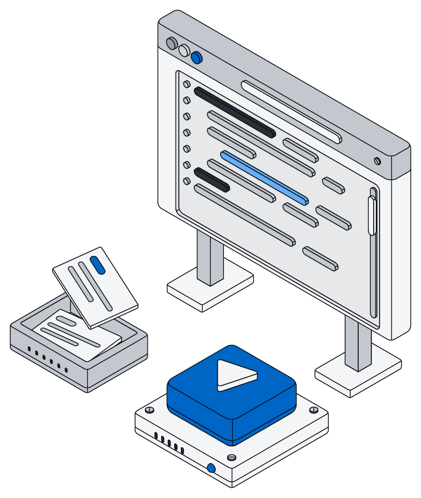
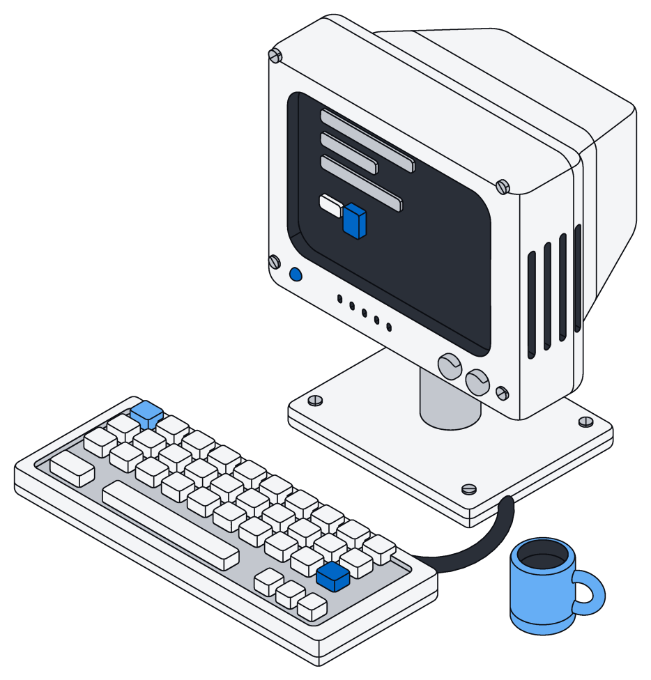

Every AI app. One connection.
Add Archive to ChatGPT, Claude, Gemini or Grok. Your assistant can then find, update and file your company's information for you.

Big jobs in one go.
Your assistant writes out the steps and Archive carries them out right next to your information.
Sorting a hundred files or updating a whole list takes one request, not a hundred back-and-forths.

As you, all or nothing.
Your assistant sees and changes only what you could, nothing more.
If anything goes wrong partway, every change is undone, so nothing ends up half done.

It already knows your business.
Before it starts, your assistant sees how your information is organized: every field, what is required and how things link together.
Add a field and the next conversation already knows about it.

A key for each assistant.
Every assistant gets its own access key, and it can only do less than you: fewer spaces, less say, an end date.
Turn off one key and only that assistant stops.

Fifty files, one request.
Ask your assistant to go through new files and file every invoice. It already knows what an invoice looks like in your business, so there is nothing to explain.
const files = await archive.files({ limit: 50 }) const filed = [] for (const file of files) { if (file.status !== "done" || !/invoice/i.test(file.text)) continue const seen = await archive.list("invoice", { where: { source: file.id }, limit: 1 }) if (seen.length) continue const row = await archive.create("invoice", { customer: file.metadata.from ?? file.name, amount: file.text.match(/total[:\s]+([^\n]+)/i)?.[1], source: file.id, }) filed.push(row.id) } return { filed }
/** Table name to row type. */ interface Tables { invoice: Invoice; contract: Contract; person: Person; } /** An invoice you sent or received. */ interface Invoice extends Base { /** Who it is billed to. */ customer: string; /** Total due. */ amount?: Money; /** The file it came from. References a file: archive.file(id). */ source?: string; }
curl https://your-workspace.archive.mulholland.ai/api/run \ -H "Authorization: Bearer $ARCHIVE_TOKEN" \ -d '{"code": "return archive.list(\"invoice\", { limit: 5 })"}' # {"result": [...], "logs": [], "error": ""}
Connect in a minute.
In ChatGPT, Claude, Gemini and Grok, add Archive from the app's connectors and sign in. Coding tools connect with your workspace address and an access key.
- A
Claude Code
One command and you are connected.
- B
Cursor
Add Archive to your project's settings.
- C
Claude Desktop
Add Archive to the app's settings file.
- D
ChatGPT and claude.ai
Add Archive as a connector and sign in to your workspace.
claude mcp add --transport http archive \
https://your-workspace.archive.mulholland.ai/mcp \
--header "Authorization: Bearer $ARCHIVE_TOKEN"
{
"mcpServers": {
"archive": {
"url": "https://your-workspace.archive.mulholland.ai/mcp",
"headers": { "Authorization": "Bearer $ARCHIVE_TOKEN" }
}
}
}
{
"mcpServers": {
"archive": {
"command": "npx",
"args": [
"-y", "mcp-remote",
"https://your-workspace.archive.mulholland.ai/mcp",
"--header", "Authorization:${AUTH_HEADER}"
],
"env": { "AUTH_HEADER": "Bearer $ARCHIVE_TOKEN" }
}
}
}
# Settings → Connectors → Add Archive Server URL https://your-workspace.archive.mulholland.ai/mcp Tool run # Then ask: "Call run with: return await archive.tables()"
Works the same everywhere.
What your assistant does in a chat works the same from your own apps and from the command line.

Your own apps
- Send the same steps from anything you build
- Every action is also available on its own
- Each request carries a sign-in or an access key

Command line
- Run a saved set of steps from your terminal
- Print every action, with your own records in it
- Make a new access key for an assistant

Guardrails
- Sees only what its person can see
- No reaching out to the internet or other files
- Time and size limits on every job
Fifteen things it can do.
Everything your assistant can do in Archive, in fifteen plain actions. If something is off, it hears exactly which field to fix.
| Action | Area | What it does |
|---|---|---|
| Ask | Records | Answer a precise question about your records, from only what you can see |
| Browse | Records | A list of records or a saved board, narrowed to exact values |
| Open | Records | One record |
| Add | Records | Add a record, checked and tidied first, or start a blank page, Word document, spreadsheet or slide deck |
| Change | Records | Change some fields of a record, or clear one |
| Remove | Records | Remove a record |
| Search | Records | Search all the records and files you can see, best match first |
| Describe | Structure | Write out how your information is organized, one part at a time |
| Reshape | Structure | Plan a change to how your information is organized, then make it |
| Overview | Structure | Every kind of record and saved board, with its fields, notes and links |
| Files | Files | The files you can see, with the text read out of them |
| File | Files | One file, with the text read out of it |
| Read | Documents | The layout of a Word document, spreadsheet, slide deck or page |
| Edit | Documents | Make a list of edits to a document, all of them or none |
| Spaces | Access | The spaces you can see, and what you may do in each |
Questions
Which AI apps can use Archive?
ChatGPT, Claude, Gemini and Grok, right from their connector lists. Coding tools like Claude Code and Cursor connect with an access key.
Can my assistant see things it shouldn't?
No. It sees exactly what the person who connected it can see, and its key can only narrow that, never widen it.
What if a job fails halfway?
Everything it changed is undone, so nothing ends up half done. The one exception is a change to how your information is organized, which sticks as soon as it succeeds.
Can it reach other websites or apps?
Not while it works in Archive. Your assistant can look up what it needs first, then bring it along.
How does my assistant know how my business is organized?
Archive tells it up front: every kind of record, its fields and the notes you wrote about them. When you change something, the next conversation sees it.
Give your AI something real to work with.
Connect ChatGPT, Claude, Gemini or Grok to your first workspace for free.